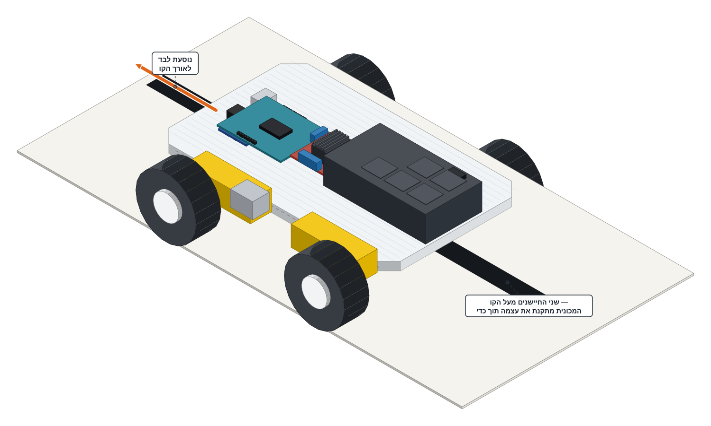

זה הרגע שכל הפרויקט נבנה בשבילו. בשלב הקודם ראיתם ששני חיישני הקו — ה"עיניים" של המכונית — מבחינים בין רצפה לקו שחור. עכשיו מעלים את הקוד שמחבר בין העיניים לגלגלים והמכונית נוסעת בעצמה לפי ארבעה כללים פשוטים: שתי העיניים על הרצפה — נוסעים ישר. העין השמאלית על הקו — הגלגל השמאלי מאט. העין הימנית על הקו — הגלגל הימני מאט. שתי העיניים על הקו — עוצרים.

השלב הזה בנוי משני חלקים: קודם מעלים את הקוד דרך המחשב ואז לוקחים את המכונית אל הקו ומשחררים.
מוודאים שכבל ה-USB מחובר בין המחשב לארדואינו ושמתג בית הסוללות (8 סוללות AA) כבוי.כשהמתג כבוי, הגלגלים לא מסתובבים על השולחן באמצע ההעלאה.
פותחים את הקובץ 03_line_follow.ino ב-Arduino IDE.הקובץ נמצא בתוך תיקיית פרויקט 4 שלכם, ליד הקבצים הקודמים שהעליתם.
לא משנים שום דבר בקוד — רק מעלים אותו.
לוחצים על כפתור ה-Upload ומחכים להודעה Done uploading בירוק.
מנתקים את כבל ה-USB מהארדואינו.מעכשיו המכונית לא צריכה את המחשב — היא מקבלת חשמל מהסוללות דרך בקר המנועים L298N.
לוקחים את המכונית אל הקו הישר שעל הרצפה.
מציבים אותה בתחילת הקו, כך שהקו השחור עובר בין שני חיישני הקו — עין אחת מכל צד של הקו.
מדליקים את מתג הסוללות. יש שתי שניות שקט לפני שהגלגלים זזים. בזמן הזה מוודאים שהמכונית מיושרת על הקו. משחררים ולא נוגעים.
עוקבים אחריה עד סוף הקו. בסוף הנסיעה מרימים את המכונית ומכבים את מתג בית הסוללות.
^
|
#####
##### line
+------#####------+
| ##### |
| [L] ##### [R] |
| ##### |
+------#####------+
#####
#####
הקו עובר בין שני החיישנים — לא נוגע באף אחד מהם.
תצלום או איור מלמעלה של המכונית מוצבת בתחילת הקו הישר: הקו השחור עובר בין שני חיישני הקו בלי לגעת באף אחד מהם וחץ מסמן את כיוון הנסיעה לאורך הקו.
אפשר להציץ בקוד ב-IDE. כל סיבוב של loop() הוא החלטה אחת: בודקים מה שתי העיניים רואות ובוחרים —
03_line_follow.inoif (!leftOnLine && !rightOnLine) { drive(BASE_SPEED, BASE_SPEED); // שתי העיניים על הרצפה ← נוסעים ישר } else if (leftOnLine && !rightOnLine) { drive(BASE_SPEED - CORRECTION, BASE_SPEED); // העין השמאלית על הקו ← הגלגל השמאלי מאט } else if (!leftOnLine && rightOnLine) { drive(BASE_SPEED, BASE_SPEED - CORRECTION); // העין הימנית על הקו ← הגלגל הימני מאט } else { stopMotors(); // שתי העיניים על הקו ← עוצרים }
לא צריך לכתוב או לשנות — רק מעלים, מציבים ומשחררים.
מפעילים את המתג — ובמשך שתי שניות שום דבר לא קורה. זה בכוונה: הקוד נותן זמן ליישר את המכונית ולשחרר. אחר כך המכונית נוסעת קדימה לאורך הקו ובכל פעם שהיא סוטה הצידה — אחד הגלגלים מאט לרגע והיא מתיישרת חזרה אל הקו. בסוף הקו, או כשמרימים אותה מהרצפה, היא עוצרת לבד.
המכונית לא נוסעת בקו מושלם — היא מתנדנדת קלות ימינה ושמאלה. זו לא תקלה: זו בדיוק צורת הנסיעה של עוקב קו — סטייה קטנה, תיקון, סטייה קטנה, תיקון.
LINE_IS_HIGH) — תיקון של דקה.